P39 筛选组合 · 待审
真实 Vue 逻辑，预览专用模板和样式；所有接口返回测试样例。只审核字段及底部操作，不包含外层抽屉、整页、实际筛选或生产验收。
390px · 默认字段 · 重置禁用
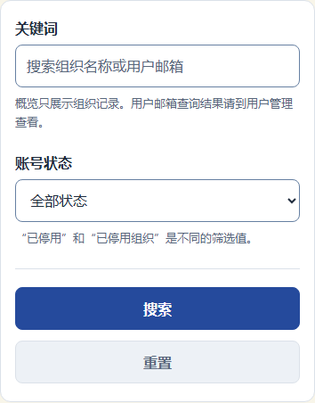
390px · 关键词 · 蓝色键盘焦点
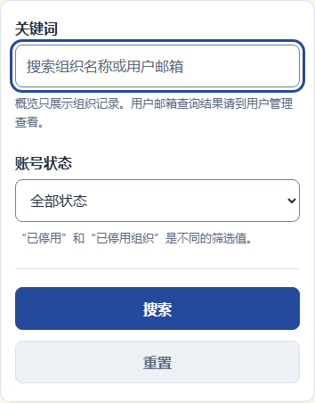
390px · 账号状态 · 蓝色键盘焦点
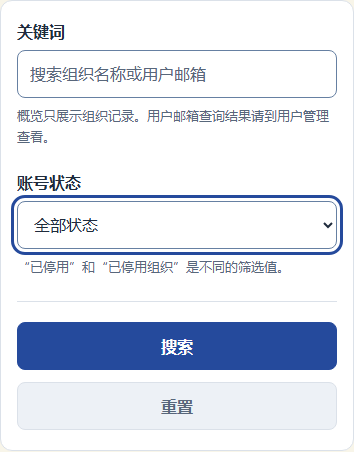
390px · 已填写 · 已停用组织
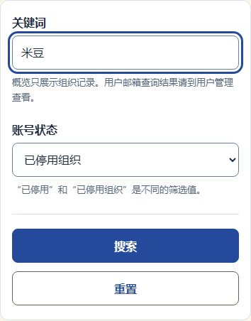
390px · 搜索 · 键盘焦点
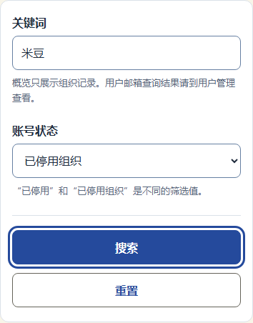
390px · 搜索 · 按下未提交
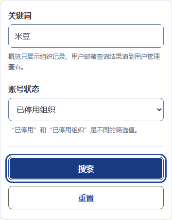
390px · 读取中 · 搜索和重置禁用
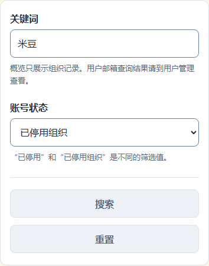
390px · 重置 · 键盘焦点
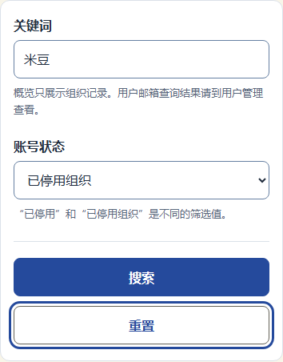
1440px · 默认字段 · 重置禁用
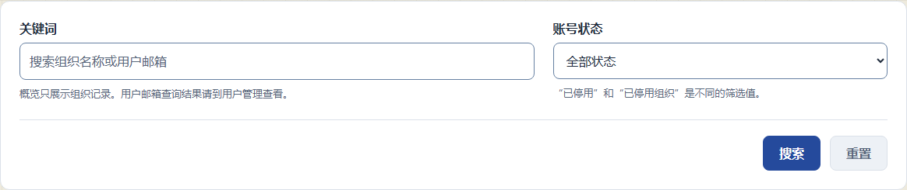
1440px · 关键词 · 蓝色键盘焦点
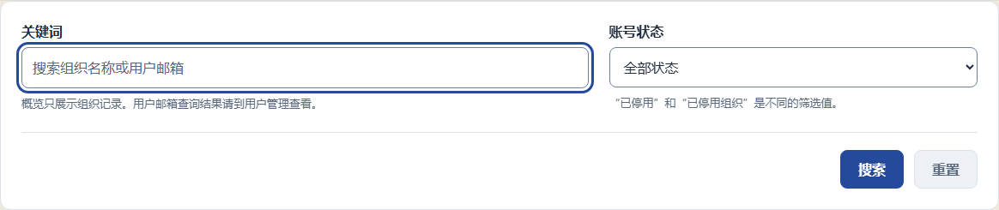
1440px · 账号状态 · 蓝色键盘焦点
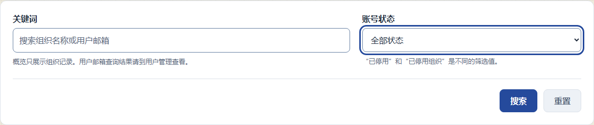
1440px · 已填写 · 已停用组织
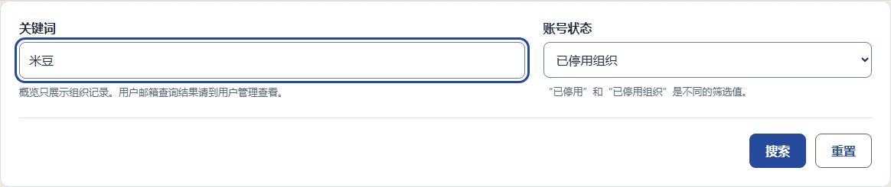
1440px · 搜索 · 悬停
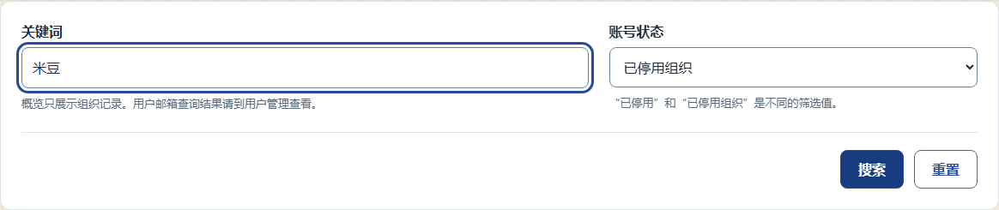
1440px · 搜索 · 键盘焦点
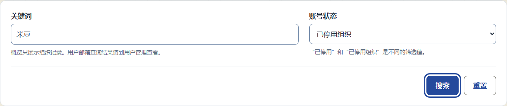
1440px · 读取中 · 搜索和重置禁用
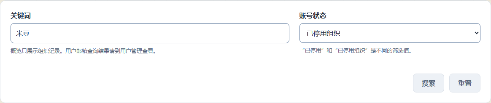
1440px · 重置 · 键盘焦点
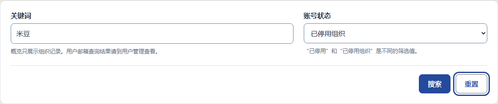